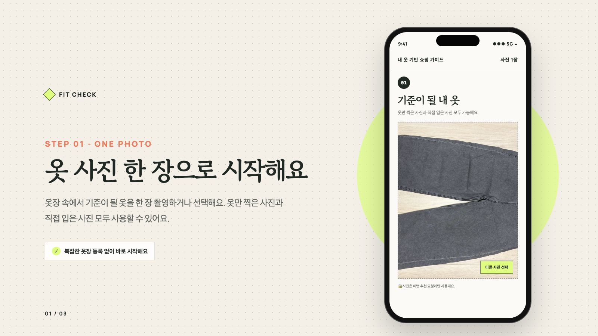
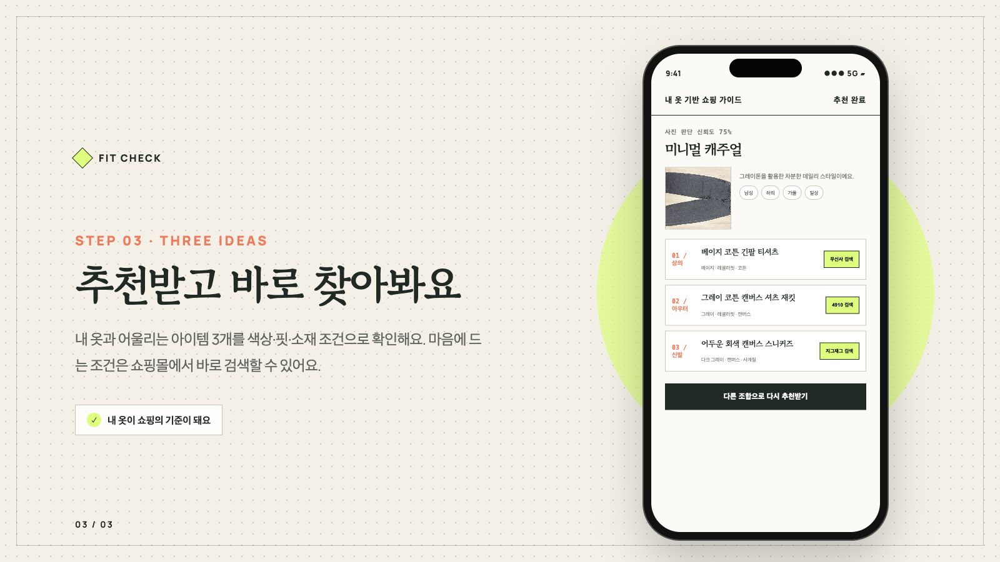
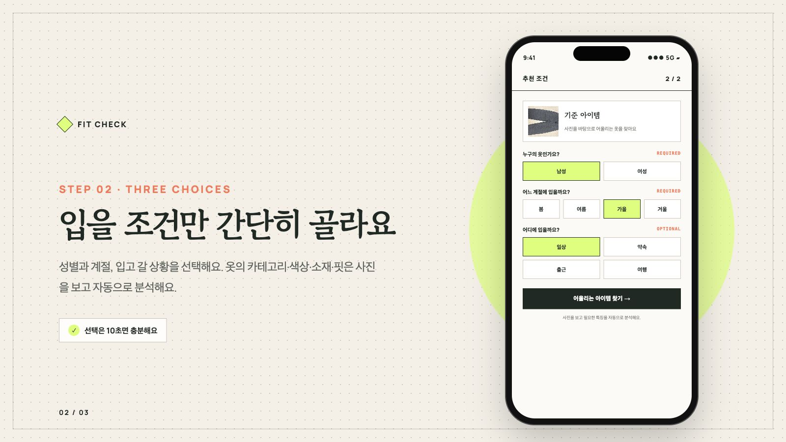

01 / PHOTO
기준이 될
기준이 될
내 옷을 올려요.
옷만 찍은 사진과 직접 입은 사진 모두 가능해요. 이번 추천에만 사용돼요.

ONE PHOTO · THREE IDEAS
내 옷이옷장 속 옷 사진 한 장을 올리면, 함께 입기 좋은 아이템의 색상·핏·소재를 골라 쇼핑 검색까지 연결해드려요.

내 옷 분석 · 스타일 방향 · 추천 아이템 3가지 색상과 핏, 소재 조건으로 쇼핑몰에서 바로 검색할 수 있어요.
HOW IT WORKS
복잡한 옷장 등록도, 사고 싶은 상품 링크도 필요 없어요. 세 단계면 충분해요.
옷만 찍은 사진과 직접 입은 사진 모두 가능해요. 이번 추천에만 사용돼요.

성별과 계절, 입을 상황을 선택하면 추천의 소재와 분위기가 더 정확해져요.

어울리는 아이템 세 가지를 확인하고 원하는 쇼핑몰의 검색 결과로 이동해요.
쇼핑몰의 완성 코디가 아니라 내가 실제로 가진 옷에서 시작해요.
막연한 스타일 조언 대신 색상·핏·소재가 담긴 검색 조건을 알려줘요.
추천을 확인한 뒤 무신사·4910·에이블리·지그재그에서 찾아볼 수 있어요.